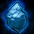

Patch Notes
Note - Big rework here. I felt Mages would enjoy a new tree inspired by Medivh / focused on risky knowledge-seeking. It also made sense to unify Fire / Frost (like Shaman's Elemental tree) while keeping options open. The Temporal tree was inspired by SoD, and works as a healing / DPS tree.
Balance Changes Key


 labels the expansion Blizzard made that change.
labels the expansion Blizzard made that change.
 labels an idea Blizzard made during SoD.
labels an idea Blizzard made during SoD.
 labels a new idea I came up with.
labels a new idea I came up with.
Thanks for exploring! - Mynta | Aggrophobia, fear-bombing mobs since 2009, Andorhal PvP | NA (@mynlol on Discord)
Balance Changes
-
Spirit now increases Spell Haste for all classes.
-
Every 1 Spirit increases Spell Haste by 0.05%, which reduces the cast time of spells and the Global Cooldown. The Global Cooldown cannot be reduced below 1 sec. Does not affect melee or ranged attack speed.
(350 Spirit would equal around 17% spell haste - making a 2.5 sec spell around 2.13 sec.)
-
Counterspell no longer triggers the global cooldown.
-
Mana Shield now gets a percentage of the Mage's bonus to spell damage or healing as an additional effect (whichever is higher).
-
Conjured mana gems no longer disappear from your backpack after being logged out for more than 15 minutes. Higher ranks of Conjure Mana Gem will recharge an existing mana gem to maximum charges.
-
Fire Ward and Frost Ward now gain additional benefit from spell damage and have a 10% chance to reflect spells of that type.
-
Portal spells now have separate, 24 hour cooldowns.
Note - Mages...don't hate me, but I truly feel that Classic+ should not enable nearly as much fast travel as WoW ended up having. This change would limit the amount of group travel, but Mage "Teleport" spells would still have no CD and enable them to travel fast individually. (This also would mean you can sell your portal for more gold!)
New Spells and Abilities
-
Molten Armor is now trainable at Level 36:
- Causes Fire damage when hit and increases your chance to critically hit by 3%. Only one type of Armor spell can be active on the Mage at any time. Lasts 30 min.
-
Focus Magic is now trainable at level 50:
- Increases the target's critical effect chance with spells by 3%. When the target lands a spell critical, the Mage receives mana equal to 10% of that spell's base mana cost. Cannot be cast on self. Lasts 30 min.
-

Ice Block is now trainable at level 30:- You become encased in a block of ice, protecting you from all physical attacks and spells for 10 sec, but during that time you cannot attack, move or cast spells. 5 min cooldown.
-
 Arcane Blast is now trainable at level 20:
Arcane Blast is now trainable at level 20:
- Blasts the target with energy, dealing Arcane damage. Each time you cast Arcane Blast, the casting time is reduced while mana cost is increased. Effect stacks up to 3 times. Lasts 8 sec.
 Hero's Journey
Hero's Journey
-
Upon reaching level 60, the Mage goes on a difficult knowledge-seeking journey to learn the Wish spell:
-
Play fate against a powerful foe, increasing an Elite or Boss target's damage taken by 20% while increasing their damage, attack speed and casting speed by 50% for 5 min. This spell is unstable and causes the creature to occasionally erupt with arcane magic. Reagents: Arcane Crystal. 1 hour cooldown.
Note - Seems like a crazy spell huh? I designed this spell from an RPG idea that would enable guilds to create their own "hard modes" that increase kill speed but make it very risky. This spell doesn't provide any bonus rewards, it simply is a "...wanna go brrr but maybe die? sure." spell. Think Bloodlust but more chaotic. Also...doing this on a random boss in Zul Gurub or elite in the world would just be so fun.
-
Play fate against a powerful foe, increasing an Elite or Boss target's damage taken by 20% while increasing their damage, attack speed and casting speed by 50% for 5 min. This spell is unstable and causes the creature to occasionally erupt with arcane magic. Reagents: Arcane Crystal. 1 hour cooldown.
labels the expansion Blizzard made that change. labels an idea Blizzard made during SoD. labels a new idea I came up with.